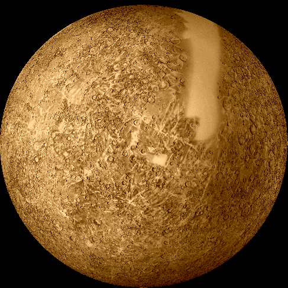

|
|
 MercuryMercury is the innermost planet of the solar system; it is a little bigger than the Earth's Moon. The surface of the planet is covered with craters, like the Moon, but temperatures in Mercury can reach over 800oF because it is so close to the Sun and rotates so slowly. Some scientists believe that the interior structure of Mercury includes a metallic core, an intermediate rocky layer, and a thin brittle crust. The composition of Mercury is probably high in iron, although surface features show that volcanic activity once existed at the surface. There is little proof of motions near the surface of the planet now, although at earlier times during Mercury's evolution the surface had a lot more things going on with it. We really don’t know that much about Mercury, compared to most of the other planets, because it is pretty difficult to see and only one spacecraft has studied the planet. Observations of Mercury from ground-based observers and the Mariner 10 spacecraft have not shown evidence of a significant atmosphere compared to other planets. Mariner 10 did find a tiny amount of helium 1000 km above the surface, Sodium, potassium and oxygen have also been found in Mercury's very weak atmosphere, but these elements can be lost when they react with the Sun and Mercury's magnetic field. Temperatures at the surface range between -300 and 800oF. This large range in surface temperature is possible because Mercury is so close to the Sun (a year is only 88 Earth days long) and does not have sufficient atmosphere present to moderate the range in surface temperature. Mercury is the only inner planet other than the Earth that has a significant magnetic field (220 nT). |